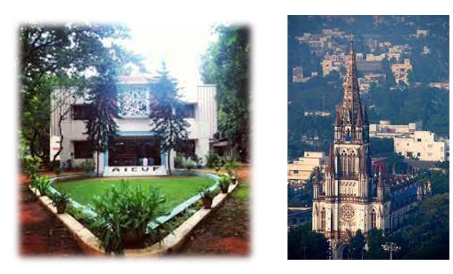
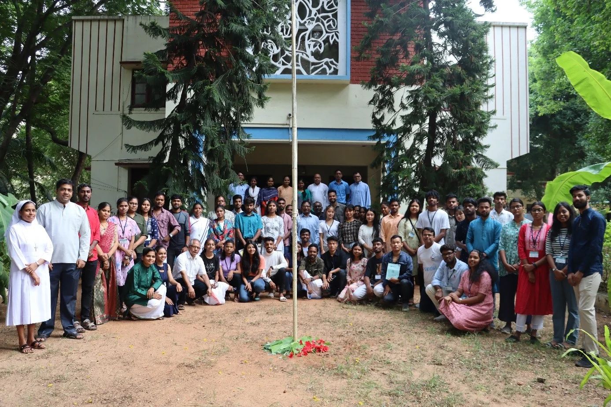

AICUF, as the only Catholic University students Movement Marching Towards its Centenary with the Motto of “Doing Truth in Charity” as visualized and established by Fr. Carty S.J, the founder of the movement at St. Joseph’s College, Trichy, Premises in 1924, we are called to “See, Judge and Act” according to the present changing times in the world and in our country. As we are celebrating our centenary with a vision and mission of “Marching with marginalized with critical Social awareness and political alertness to make a difference” that would instil hope in all to work towards building a “Better Human World”. In the words of Fr. Claude D’Souza S.J, one of the long time national Director of AICUF Movement, AICUFers are called to be the “Prophets of the 21 st Century and Harbingers of Hope” , to the unjust society in which we are born. Despite the challenging times let all AICUFers, advisors, animator, and all people of good will, who want to make a difference and become an agent of social change of our times, let’s together march forward with determination and courage to realize that, “We were born into an unjust society and we are determined not to leave it as we have found it”
AICUF had its humble beginning in 1924 at St. Joseph’s College, Trichy, when a group of college students joined together under the banner of the Catholic Young Men’s Guild (CYMG) to deepen the faith, to find its intellectual dimension and to be its witness. “The Rally” Magazine which was started as the organ of the CYMG has now turned out to be the forum for university students to examine society and its system and subsystems critically. AICUF stands for the service and emancipation of women and men as a movement of, for, by, and with university students. It develops leaders who will serve and struggle for the liberation of all women and men, regardless of race or ethnicity. Linked by a vision of society in which every man is free to live a full human existence free of all forms of exploitation, AICUF seeks to contribute to the creation of a BETTER WORLD in which core values such as truth, human dignity, social justice, and peace prevail, and democracy is a way of life for al
© 2024 ALL INDIA CATHOLIC UNIVERSITY FEDERATION | ALL RIGHTS RESERVED